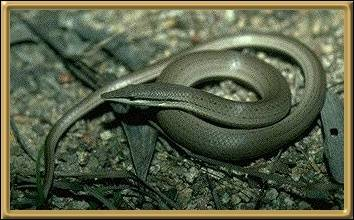

Personally, I don't really know how you would tell this
lizard from a snake if you happened to stumble across it - but they really are lizards,
and have the ability to drop their tail. These particular legless lizards are found
through most of Australia's mainland, and are, I believe, considered to be secure.
Photographer: Unknown